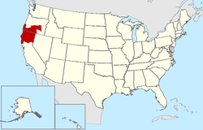

State of Jefferson
From Wikipedia, the free encyclopedia
| This article documents a current event. Information may change rapidly as the event progresses, and initial news reports may be unreliable. |
| State of Jefferson | |
Flag | |
 Area controlled by the State of Jefferson (red), November 2009 | |
| Nickname | The Double-Cross State |
|---|---|
| Motto | "Secede every Thursday" (unofficial) |
| Provisional capital | Yreka |
| Largest city | Redding |
| Government | Joint convention of counties (provisional) |
| Provisional Governor | Wade H. Pruett |
| Presiding Delegate | Lorraine M. Haskett |
| Legislature | Joint Convention of Counties (36 delegates) |
| History | |
| - State of Shasta proposed | 1852 |
| - Proclamation of Independence | November 27, 1941 |
| - Proclamation restored | February 26, 2009 |
| - Joint Convention | March 19, 2009 |
| - Jackson County joins | April 16, 2009 |
| - Red Bluff Accord | June 11, 2009 |
| Member counties | 18 (12 CA, 6 OR) |
| Area | |
| - Estimate | 62,799 sq mi (162,650 km²) (member counties); 73,025 sq mi (189,130 km²) including Harney County |
| Population | |
| - Estimate | 1,222,741 (2000 census); 1,298,947 (2008 Census Bureau estimate) |
| Currency | United States dollar |
| Time zone | Pacific |
| Calling code | +1 (area codes 530, 707, 541) |
The State of Jefferson is a de facto self-governing state formed by eighteen counties of Northern California and Southern Oregon after the Presidents' Day Massacre, with its provisional capital at Yreka. The region has sought separate statehood since the 1850s and issued a "Proclamation of Independence" under the Jefferson name in November 1941. On February 26, 2009, the Siskiyou County Board of Supervisors declared the 1941 proclamation restored, and the other counties followed over the next seven weeks, the last being Jackson County on April 16.
Jefferson describes itself as a state within the United States and does not claim to have left the Union, but it rejects the authority of the state governments in Sacramento and Salem. As of November 2009 the federal government has not recognized its statehood; the two cooperate under the Red Bluff Accord of June 2009. The member counties had about 1.3 million inhabitants before the crisis. Harney County, to the east, is patrolled by the Jefferson State Guard but is not a member.
Contents[hide] |
[edit]History
[edit]Early statehood movements
Gold was found in the Klamath River basin in 1851, carrying the California Gold Rush north into the Rogue River valley. Miners far from both state capitals felt neglected, and in 1852 a bill to create a "State of Shasta" was put to the California legislature; it died in committee. Other plans, including a "State of Klamath", followed in 1853–55 before the American Civil War ended them.[1] A meeting at Jacksonville in January 1854 called for a separate "Jackson Territory" made of the southern Oregon counties and the northern California mining districts.[citation needed]
A bill for a "State of Siskiyou" was introduced in the California Assembly in 1909 and again failed.[citation needed] Through the 1930s county officials on both sides of the border complained that the two state highway departments had built no usable roads into the mountains, which held copper, chromite and other minerals that the federal government wanted for rearmament.[2]
[edit]1941 movement
In October 1941 Gilbert Gable, mayor of Port Orford, Oregon, proposed a new state from Oregon's Curry, Josephine, Jackson and Klamath counties and California's Del Norte, Siskiyou and Modoc counties. The name "Jefferson" was picked in a contest run by the Yreka Siskiyou Daily News.[2]
On November 27, armed young men, many of them members of the Yreka 20-30 Club, stopped traffic on U.S. Route 99 south of Yreka and handed out a Proclamation of Independence declaring Jefferson "in patriotic rebellion against the States of California and Oregon". It read in part:
You are now entering Jefferson, the 49th State of the Union. Jefferson is now in patriotic rebellion against the States of California and Oregon. This State has seceded from California and Oregon this Thursday, November 27, 1941. Patriotic Jeffersonians intend to secede each Thursday until further notice.
Gable died of a heart attack on December 2. Two days later John Childs, a retired judge from Crescent City, was installed as provisional governor at a torchlight rally in Yreka filmed by newsreel crews. The newsreels were due to be shown in the week of December 8; the attack on Pearl Harbor on December 7 ended the movement.[2][6] Reporting on the movement for the San Francisco Chronicle won the 1942 Pulitzer Prize for Reporting.[7]
[edit]Later activity, 1942–2008
The State of Jefferson Citizens Committee, formed in 1941, survived, and in 1989 the public radio network of Southern Oregon University (then Southern Oregon State College) renamed itself Jefferson Public Radio. "State of Jefferson" signs appear on barns and businesses along Interstate 5 between Weed and Yreka.[citation needed] Calls for a separate state were revived from time to time, for example after the 2001 Klamath Basin water shut-off, but none reached either state legislature before 2009.[8]
[edit]2009 restoration
After the Presidents' Day Massacre of February 16, 2009, the California Highway Patrol and Oregon State Police pulled northern units back toward Sacramento and Salem, leaving long stretches of Interstate 5 unpatrolled. According to the Redding Record Searchlight, the CHP's Yreka and Mount Shasta area offices were down to "two or three cars a shift" by February 20.[3] Banks in Redding and Medford closed for four days, and several gas stations along I-5 ran dry after truck deliveries from the Bay Area stopped.[9]
On Thursday, February 26, the Siskiyou County supervisors voted 5–0 at the Yreka courthouse to "restore the declaration of November 27, 1941" and set up a checkpoint at Yreka's south I-5 exit, close to the 1941 roadblock. Supervisor Wade H. Pruett, a rancher from Montague who had left the board in 2004, read the resolution from the courthouse steps. He told reporters: "We waited sixty-eight years for somebody in Sacramento to call back. Nobody did, so we're picking up where we left off."[3]
Modoc and Del Norte counties passed similar resolutions on March 2, followed in the next two weeks by Trinity, Shasta, Lassen, Klamath and Josephine counties. The Humboldt County vote on March 12 was 3–2; the Arcata city council and student groups at Humboldt State University objected, and about 2,000 people marched in Eureka on March 14 against what organizers called "a county coup".[10] In Butte County the Chico city council passed a resolution asking the supervisors to wait, but the board voted 4–1 on March 17.[11] Mendocino County joined on March 18 by a vote of 3–2, after a session that lasted past midnight.[citation needed]
[edit]Joint Convention
On March 19, a Thursday, delegates from seventeen counties met at the Siskiyou Golden Fairgrounds in Yreka as the Joint Convention of Counties, with observers from Jackson County, which had not yet voted. The convention chose Pruett as provisional governor on the second ballot, over Klamath County commissioner Dale R. Esterly.[4] It adopted a twelve-article "Yreka Compact" stating that the counties "remain in and of the United States" and that California and Oregon law stays in force "as it stood at midnight on February 15, 2009" until the convention changes it.[4]
[edit]Jackson County
Jackson County, the most populous member, was the last to join. The Medford city council voted 6–2 on March 5 against any change of state, and Jackson County commissioners at first sent only observers to the March 19 convention.[12] Through March and April, Oregon State Police posts on I-5 in the Rogue Valley were reduced to a single office in Central Point, and most fuel deliveries came up I-5 from Redding rather than down from Portland.[12] On Thursday, April 16, the three county commissioners voted unanimously to join, overruling the Medford objection. Medford's mayor said the city would "comply under protest", and the city council has not repealed its March resolution.[13]
[edit]Red Bluff Accord
When the federal government moved to Sacramento it at first demanded that the northern counties obey the state government. Because Jefferson holds Shasta Dam and Shasta Lake, about two-fifths of the Central Valley Project's storage, as well as Lake Oroville, the largest reservoir of the State Water Project, the federal side could not simply impose its terms. On April 28 a column of federal vehicles that crossed into Tehama County on Interstate 5 was stopped by sheriff's deputies near Corning and turned back without shots being fired.[14]
Talks began in May at the Tehama County courthouse in Red Bluff. The accord was signed on Thursday, June 11, 2009. Under it:[5]
- federal troops stay south of the interim line, which follows the Butte–Sutter county line and the Glenn–Colusa county line west to the Mendocino National Forest;
- Jefferson keeps releasing water from Shasta, Keswick and Oroville to the Central Valley on the 2008 schedule set by the Bureau of Reclamation and the California Department of Water Resources;
- Bureau of Reclamation and DWR staff at the dams remain in place and are paid by their agencies;
- power from Shasta and Oroville continues to flow into the grid, with a share credited to Jefferson utilities;
- the Sierra Army Depot at Herlong stays under its existing garrison, which reports to neither side.
The accord says nothing about recognition. A spokesman for the Acting President described it in June as "a practical arrangement with local officials".[15]
[edit]Since the accord
After the nuclear detonation at Concord–Mare Island in August, between 25,000 and 40,000 people from the Bay Area reached Jefferson, mostly by U.S. Route 101 through Mendocino County and by I-5 through Willows.[16] Reception camps were opened at the Silver Dollar Fairgrounds in Chico and the Redwood Acres fairground in Eureka. In September the convention limited new arrivals at Willows to those with family in a member county.[16]
Gasoline rationing began in Medford and Redding on September 1. In October the Joint Convention voted to take over the former California Highway Patrol offices north of the accord line, along with about 300 officers who had stayed.[citation needed]
[edit]Member counties
Population figures are from the United States Census 2000 and the Census Bureau's county estimates for July 1, 2008, released in March 2009.[17][18] Dates are those of the county board's resolution. Of the seven counties in Gable's 1941 proposal, all are members.
| County | State | County seat | Pop. (2000) | Pop. (2008 est.) | Joined |
|---|---|---|---|---|---|
| Siskiyou | CA | Yreka | 44,301 | 44,542 | February 26, 2009 |
| Modoc | CA | Alturas | 9,449 | 9,184 | March 2, 2009 |
| Del Norte | CA | Crescent City | 27,507 | 29,100 | March 2, 2009 |
| Trinity | CA | Weaverville | 13,022 | 14,317 | March 3, 2009 |
| Shasta | CA | Redding | 163,256 | 180,214 | March 5, 2009 |
| Lassen | CA | Susanville | 33,828 | 34,574 | March 5, 2009 |
| Klamath | OR | Klamath Falls | 63,775 | 66,425 | March 5, 2009 |
| Josephine | OR | Grants Pass | 75,726 | 81,618 | March 6, 2009 |
| Curry | OR | Gold Beach | 21,137 | 21,523 | March 9, 2009 |
| Lake | OR | Lakeview | 7,422 | 7,239 | March 10, 2009 |
| Tehama | CA | Red Bluff | 56,039 | 61,550 | March 10, 2009 |
| Plumas | CA | Quincy | 20,824 | 20,275 | March 11, 2009 |
| Humboldt | CA | Eureka | 126,518 | 129,000 | March 12, 2009 |
| Coos | OR | Coquille | 62,779 | 63,453 | March 13, 2009 |
| Glenn | CA | Willows | 26,453 | 28,237 | March 16, 2009 |
| Butte | CA | Oroville | 203,171 | 220,337 | March 17, 2009 |
| Mendocino | CA | Ukiah | 86,265 | 86,221 | March 18, 2009 |
| Jackson | OR | Medford | 181,269 | 201,138 | April 16, 2009 |
| Total | 1,222,741 | 1,298,947 |
[edit]Harney County
Harney County (seat Burns; 7,609 people in 2000, 6,747 in the 2008 estimate) has not joined. The county court voted 2–1 against membership on March 25, but the sheriff asked in May for help patrolling U.S. Route 20 and U.S. Route 395, and the Jefferson State Guard has kept a detachment at Burns since then.[19] Maps published in Yreka often shade Harney with the member counties, and some early press reports gave Jefferson's area as about 67,300 sq mi, apparently counting part of it.[9] Harney County alone covers 10,226 sq mi.[citation needed]
Douglas County, between Josephine County and the Willamette Valley, voted not to join on March 24 and is administered from Salem.[citation needed]
[edit]Geography
Jefferson stretches from the Pacific coast between Coos Bay and the mouth of the Gualala River in Mendocino County east to the Nevada line, and from the Douglas County line in Oregon south to the upper Sacramento Valley. Most of it is mountainous and forested, and much of the land is federal: Klamath National Forest, Shasta-Trinity National Forest, Rogue River-Siskiyou National Forest, Six Rivers National Forest, Modoc National Forest, Lassen National Forest, Plumas National Forest and Fremont-Winema National Forest.
[edit]Mountains
The Klamath Mountains, including the Siskiyou Mountains, the Trinity Alps, the Marble Mountains and the Salmon Mountains, cover the western half. They are among the oldest ranges in the region and are cut by the deep canyons of the Klamath, Trinity, Salmon, Scott and Rogue Rivers. I-5 crosses the Siskiyous at Siskiyou Summit (4,310 ft), the highest point on the interstate.
The southern Cascade Range runs north–south through the middle of the state, with Mount Shasta (14,179 ft), Lassen Peak (10,457 ft), Mount McLoughlin and the caldera of Crater Lake in Klamath County. The northern end of the Sierra Nevada reaches into Plumas and Butte counties. East of the Cascades lie the Modoc Plateau and the Warner Mountains, and in Oregon the basin-and-range country of Lake County around Summer Lake and Lake Abert.
[edit]Klamath Basin
The upper Klamath Basin, divided between Klamath County and Siskiyou and Modoc counties, holds Upper Klamath Lake, Lower Klamath and Tule Lake. The Bureau of Reclamation's Klamath Project irrigates about 200,000 acres there.[20] The four PacifiCorp dams on the river below the lake (J.C. Boyle, Copco 1 and 2 and Iron Gate) have been the subject of a long dispute between farmers, tribes and fishermen; a draft agreement to remove them had been negotiated before the crisis and its status is unclear.[20] The Klamath Tribes, Yurok, Karuk and Hoopa Valley tribes have said they are "not parties" to the Yreka Compact.[21]
[edit]Coast
The coast runs roughly 400 miles from Coos Bay to southern Mendocino County, including the redwood forests of Redwood National and State Parks in Del Norte and Humboldt counties and the Lost Coast. The main harbors are Coos Bay, Brookings, Crescent City, Humboldt Bay and Fort Bragg.
[edit]Climate
| This section requires expansion. |
The coast is cool and wet; Crescent City and Coos Bay get 60–70 in of rain a year. Redding and the upper Sacramento Valley are among the hottest places in California in summer. The plateau country east of the Cascades is dry and cold in winter, and Alturas and Lakeview routinely fall below 0 °F.
[edit]Government
The Yreka Compact gives the Joint Convention of Counties the powers of a state legislature "for the duration of the emergency". Each member county sends two delegates, normally one supervisor or commissioner and one person chosen by the county board, for 36 in all. Most decisions need a simple majority; changes to the Compact, the admission of a new county and any agreement with "another government" need two-thirds.[4] Lorraine M. Haskett, a Lake County commissioner, has presided since the second session in April.
The convention normally meets on Thursdays in the exhibit hall of the Siskiyou Golden Fairgrounds, a practice adopted, according to Pruett, "for reasons that ought to be obvious".[4] The provisional governor's office is in the Siskiyou County courthouse annex on Fourth Street in Yreka.
County boards of supervisors (county commissions in Oregon) remain in place and keep their own budgets. Each county has continued to collect property taxes, while state sales and income taxes are not being collected; the convention adopted a 2 percent "Jefferson emergency levy" on fuel sales in July.[22]
[edit]State Guard and policing
Policing rests with county sheriffs, supported since May 2009 by a Jefferson State Guard. The Guard was formed from California and Oregon National Guard members living in the region, Forest Service law enforcement officers, retired service members and volunteers, and is commanded by Colonel (ret.) Marvin T. Ochsner, formerly of the Oregon Air National Guard. Its strength was reported as "about 2,400" in October.[19]
The garrison of the Sierra Army Depot in Lassen County reached an agreement with the Guard in May and still holds the depot; under the Red Bluff Accord it reports to neither side.[4] At Kingsley Field in Klamath Falls, home of the Oregon Air National Guard's 173rd Fighter Wing, the F-15 training squadron has stopped flying for lack of fuel and orders; the base commander has said only that the wing "is maintaining its aircraft".[23]
[edit]Courts and prisons
The Yreka Compact keeps the California superior courts and Oregon circuit courts sitting in each county. A three-judge Jefferson Court of Review, drawn from retired judges, has heard a handful of cases since July, most of them about the joining resolutions.[citation needed] In August it rejected a suit by Chico residents arguing that the Butte County vote was void.[11]
Three state prisons lie in member counties: Pelican Bay State Prison near Crescent City and the High Desert State Prison and California Correctional Center in Susanville. California corrections officers continue to staff them; the California Department of Corrections and Rehabilitation has stopped paying them and the counties have met the payroll since May.[24] No transfers of prisoners in either direction have been reported since February.
[edit]Economy
Timber, cattle, Butte County rice and Rogue Valley pears dominate. With trade to the Bay Area cut, I-5 freight to Cascadia is the main outside link.
[edit]Agriculture
Butte and Glenn counties grow rice, almonds, walnuts and prunes; Butte County alone harvested about 100,000 acres of rice in a normal year.[citation needed] Before the crisis most of the crop was milled and shipped through Sacramento and the Port of West Sacramento. The 2009 rice harvest was largely stored on farms, and mills in Richvale and Biggs have sold rice north to Cascadia and Lincoln by truck.[22]
The Rogue Valley is known for pears, and Harry & David in Medford was the largest employer in Jackson County.[citation needed] The Klamath Basin grows potatoes, alfalfa, barley and horseradish around Tulelake. Cattle are raised across Modoc, Lassen, Siskiyou, Klamath and Lake counties. In September ranchers in Modoc County reported shipping calves to Nevada buyers via U.S. Route 395 for the first time.[citation needed]
[edit]Timber
Logging, once the main industry of the Klamath Mountains and the coast, had already declined sharply after the Northwest Forest Plan of 1994 and the 2008 housing collapse. Several sawmills in Siskiyou, Shasta and Josephine counties had closed in 2008. Since the spring the convention has asked the Forest Service offices in the region to resume timber sales, which the Forest Service has not done.[citation needed]
[edit]Ports and fishing
The commercial Chinook salmon season off California and most of Oregon was closed in 2008, and the closure was extended for 2009 in April.[25] The port of Coos Bay, with a channel about 37 ft deep, has become Jefferson's main outlet for wood chips and logs; a small number of ships from Asia have called there since July. Humboldt Bay handles fuel barges from Cascadia.[22]
[edit]Cannabis
Humboldt, Mendocino and Trinity counties, the "Emerald Triangle", were already among the largest cannabis-growing areas in the United States. Sheriffs in all three counties have said they are "not enforcing anybody's marijuana laws but California's", and the convention has not taken up the question.[citation needed]
[edit]Energy and fuel
The region has no oil refinery. Before February most gasoline and diesel came by truck from Bay Area refineries and by the pipeline terminal at Chico. Since the crisis, fuel has come north from Cascadia by truck on I-5 and by barge into Humboldt Bay and Coos Bay. Electricity is supplied by PG&E and PacifiCorp crews who have stayed on; Shasta, Keswick, Trinity and Oroville dams together produce well over 1,000 MW.[citation needed]
[edit]Transport and checkpoints
The main highways are Interstate 5, U.S. Route 97, U.S. Route 101, U.S. Route 199, U.S. Route 395 and California State Route 299. Since March the State Guard has kept checkpoints at:
- I-5 south of Corning (Tehama–Glenn line) and at Willows on the accord line
- California State Route 70 and California State Route 99 at the Butte–Sutter line
- U.S. 101 south of Hopland on the Mendocino–Sonoma line
- I-5 north of Wolf Creek on the Josephine–Douglas line, facing Cascadia
- U.S. 97 and U.S. 395 at the Nevada line
- U.S. 20 and U.S. 395 at Burns, Harney County
The original checkpoint at the south Yreka exit was removed in April. Travelers must show a driver's license or a county "resident card"; the federal Identipass is not accepted. Amtrak's Coast Starlight stopped running in February, but Union Pacific freights pass through Dunsmuir and Klamath Falls under an informal arrangement.[14]
[edit]Relations
[edit]Federal government
The federal government of Acting President Raymond E. Calloway in Sacramento has not recognized Jefferson. Relations since June have been governed by the Red Bluff Accord. Federal agencies with staff in the region, including the Bureau of Reclamation, the Forest Service, the National Park Service at Crater Lake, Lassen and Redwood, and the Postal Service, deal with county officials day to day without recognizing them.[15] In September Pruett wrote to Sacramento asking for "the same courtesy Congress gave West Virginia". The letter has not been answered publicly.[citation needed]
[edit]Cascadia
Cascadia is Jefferson's main trading partner. Relations were tense in March, when Cascadian officials stopped fuel trucks at the Douglas County line, but a trade protocol signed at Roseburg on July 9 allows freight to pass in both directions under a common inspection.[13] Cascadia has asked Jefferson to hand over Oregon State Police equipment in the Rogue Valley; this has not been settled.
[edit]State of Lincoln
Jefferson and the State of Lincoln meet only by way of Harney County, which borders Lincoln's Grant County. Pruett and Lincoln's provisional governor Gordon E. Hoaglund exchanged letters in April recognizing each other's "provisional authority", and the two states let livestock trucks cross on U.S. 395 without inspection.[26]
[edit]Other reactions
 State of California: The governor's office in Sacramento called the county votes "void" in February and has made no further public statement since the federal government's arrival.
State of California: The governor's office in Sacramento called the county votes "void" in February and has made no further public statement since the federal government's arrival.- State of Oregon: Salem described the votes as "illegal and, we hope, temporary".[citation needed]
 Republic of Gilead: Radio Gilead described Jefferson in July as "a county fair playing at statehood".
Republic of Gilead: Radio Gilead described Jefferson in July as "a county fair playing at statehood".- Tribal governments: The Yurok, Karuk, Hoopa Valley and Klamath tribes have said their treaty and reservation rights are not affected.[21]
[edit]Notable incidents
- February 26: Siskiyou County restores the 1941 proclamation; checkpoint at the south Yreka exit.[3]
- March 14: About 2,000 people march in Eureka against the Humboldt County vote.[10]
- March 19: First session of the Joint Convention in Yreka.[4]
- April 16: Jackson County joins.[13]
- April 28: Federal column turned back on I-5 near Corning.[14]
- June 11: Red Bluff Accord signed.[5]
- July 9: Roseburg trade protocol with Cascadia.[13]
- August: Refugees arrive from the Bay Area after the Concord–Mare Island detonation.[16]
- October 3: Shots exchanged at the Hopland checkpoint; one Guard member wounded.[citation needed]
[edit]Flag and seal
The flag keeps the 1941 design: a green field with a gold miner's pan inscribed "The Great Seal of the State of Jefferson" and two askew black Xs, the "Double Cross", for the region's sense of being double-crossed by Sacramento and Salem. The original pan is said to be held by the Siskiyou County Museum in Yreka.[2] The convention adopted the flag without debate on March 19.
[edit]See also
- Jefferson statehood movement
- Presidents' Day Massacre
- Federal Government of the United States (2009–present)
- State of Lincoln
- Cascadia
- Red Bluff Accord
- Klamath Basin water crisis
[edit]References
- ^ "State of Jefferson". California Historical Society Quarterly 31 (2): 125–138. June 1952.
- ^ "State of Jefferson dreams were dashed by Pearl Harbor". Mount Shasta Herald. December 11, 2008.
- ^ Garrity, Dale. "Siskiyou supervisors revive 1941 declaration". Redding Record Searchlight. February 27, 2009.
- ^ Lindqvist, Karen. "Jefferson convention picks rancher as governor". Medford Mail Tribune. March 20, 2009.
- ^ "Water deal keeps federal troops south of Red Bluff". The Sacramento Bee. June 12, 2009.
- ^ "49th State Picks Governor". The New York Times. December 5, 1941.
- ^ "Reporting". The Pulitzer Prizes, 1942. Retrieved on January 20, 2009.
- ^ Associated Press. "Klamath farmers talk of 'Jefferson' as water stays shut off". July 5, 2001.
- ^ Pavlik, Steve. "Northern counties run short of fuel, cash". Redding Record Searchlight. February 22, 2009.
- ^ Ramsdell, Clare. "Thousands march in Eureka against county vote". Times-Standard (Eureka). March 15, 2009.
- ^ Oyler, Mark. "Butte supervisors join Jefferson over Chico objection". Chico Enterprise-Record. March 18, 2009.
- ^ Lindqvist, Karen. "Medford council says no to Jefferson". Medford Mail Tribune. March 6, 2009.
- ^ Lindqvist, Karen. "Jackson County joins Jefferson; Medford 'complies under protest'". Medford Mail Tribune. April 17, 2009.
- ^ Associated Press. "Federal convoy turns back at Corning". April 29, 2009.
- ^ Reuters. "Sacramento calls water pact with northern counties 'practical'". June 15, 2009.
- ^ Sandoval, Ricardo. "Bay Area evacuees fill Chico, Eureka camps". The Sacramento Bee. August 27, 2009.
- ^ U.S. Census Bureau. "Census 2000 Summary File 1 (SF 1) 100-Percent Data", county totals for California and Oregon. American FactFinder. Retrieved on February 2, 2009.
- ^ U.S. Census Bureau, Population Division. "Annual Estimates of the Resident Population for Counties: April 1, 2000 to July 1, 2008" (CO-EST2008-01). March 19, 2009.
- ^ Brandt, Owen. "Jefferson guard patrols Harney roads at sheriff's request". The Bulletin (Bend). October 12, 2009.
- ^ "Klamath Project". U.S. Bureau of Reclamation, Mid-Pacific Region. Retrieved on January 9, 2009.
- ^ Tsosie, Ellen. "Tribes say Yreka Compact does not bind them". Herald and News (Klamath Falls). April 2, 2009.
- ^ Kettering, Paul. "Rice, logs and diesel: how Jefferson pays its way". Capital Press. October 2, 2009.
- ^ "Kingsley Field jets grounded, commander says". Herald and News (Klamath Falls). May 21, 2009.
- ^ Hayes, Monica. "Counties meet prison payroll as state checks stop". Del Norte Triplicate. June 4, 2009.
- ^ "Salmon season closed off California, Oregon for second year". BBC News. April 10, 2009.
- ^ "Yreka, Spokane exchange letters". Mail Tribune (Medford). April 28, 2009.